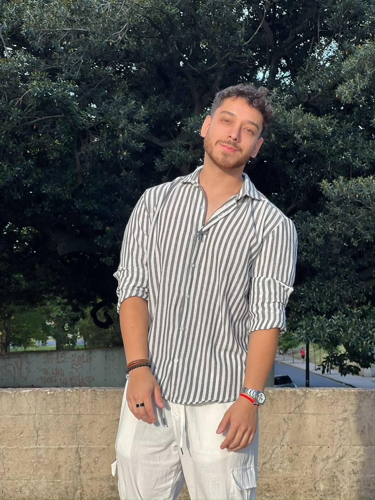
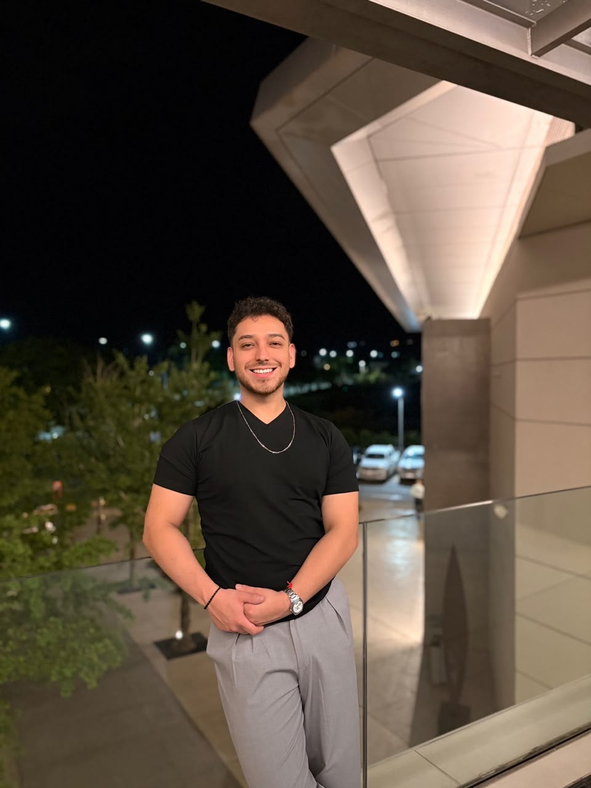
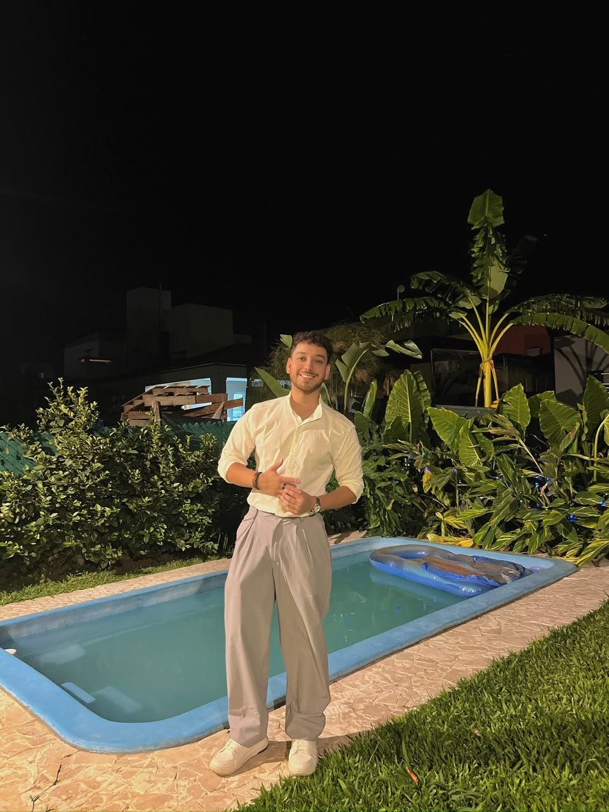
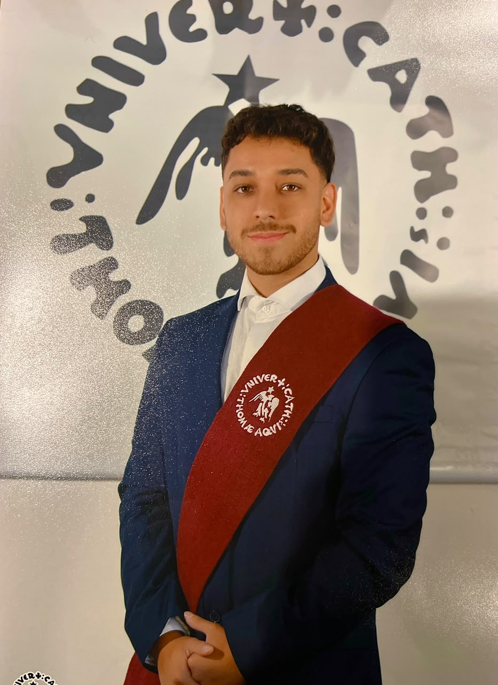

◉
Paid Media
Campaign management and optimization across Meta Ads and Google Ads, with a focus on efficiency and performance.
I’m Ignacio Tolaba, a Paid Media Analyst and digital marketing professional focused on performance, audience strategy, analytics and continuous optimization.
From campaign setup to reporting, I connect strategy, creativity and data to make digital marketing more useful and more measurable.
Campaign management and optimization across Meta Ads and Google Ads, with a focus on efficiency and performance.
Audience research, segmentation, testing and creative hypotheses designed around real user behavior.
Performance analysis, KPI monitoring, reporting and actionable insights using tools such as GA4 and Looker Studio.
Social media, content, CRM and digital strategy experience to understand paid media as part of the bigger picture.
Click a project to see how I think about the problem, the process and the marketing layer behind it.
From performance signals to actionable changes.
Turning user behavior into clearer decisions.
Reporting that helps teams act, not just look.
Connecting paid media with the wider ecosystem.
Alongside performance marketing, I create authentic, relatable visual content for brands that want to connect with people through a human point of view.
From lifestyle moments to fashion-forward visuals, I can help brands create content that feels natural on social media and fits the way people actually consume content.
Let's create together ↗I understand both sides of the content: the story a brand wants to tell and the audience it wants to reach.




Professional experience across paid media, marketing, social media and higher education.
Paid media and digital marketing, with a focus on campaign performance, optimization, audience strategy and reporting.
Marketing analysis and digital marketing responsibilities within a private healthcare organization.
Several years working across social media management, community building, communication and brand development.
Teaching E-Commerce, Social Media and marketing trends, combining practical digital knowledge with education.
I like understanding why a campaign behaves the way it does — identifying patterns, testing hypotheses and turning data into better decisions. Outside marketing, I’m also an independent musician, which has shaped my perspective on storytelling, branding and connection.
Tell me what you’re working on, what you’re trying to achieve and where you’re stuck. I’ll get back to you by email or WhatsApp.
WhatsApp: +54 381 502-0964